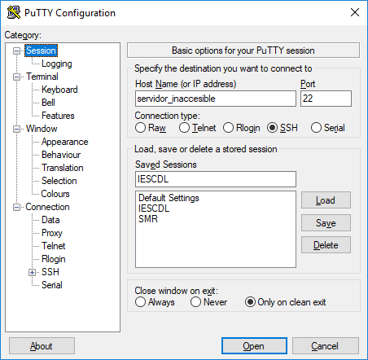
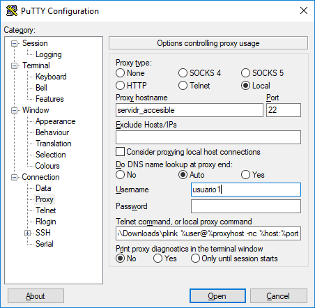
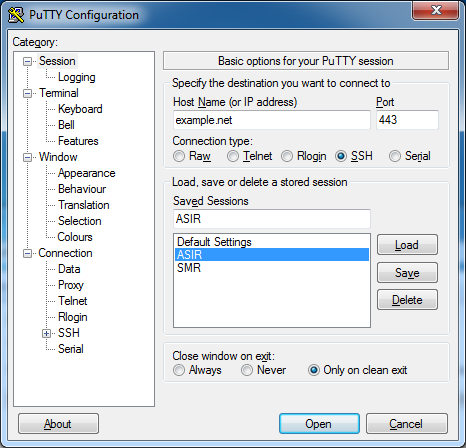
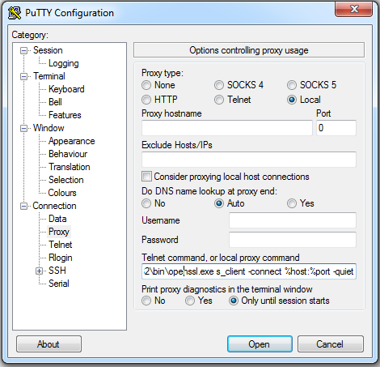

4.5.6. Aspectos adicionales¶
4.5.6.1. Transferencia de ficheros¶
El protocolo SSH permite también la transferencia de ficheros entre cliente y servidor. Aunque puede configurarse de modo que sustituya perfectamente a un servidor FTP, por ahora nos limitaremos a usar la configuración predeterminada y ver los clientes que nos permiten esta tarea.
La primera forma de aprovechar las posibilidades de transferencia es usar una herramienta de copia remota (scp proporcionada por openssh o pscp.exe de la suite de putty). El modo de usarlo es muy semejante al de la orden cp del mundo unix:
$ scp /path/local/fichero.txt usuario@servidor:path/en/el/servidor
es decir, un origen (en este caso un fichero del cliente) y un destino que se expresa como al conectarnos con el cliente ssh seguido de dos puntos. Si la ruta en el servidor es relativa se sobreentiende que lo es respecto al directorio peronal del usuario. Si no se expresa ruta alguna, el fichero se copiará en el directorio personal. En el ejemplo, el origen es local y el destino remoto, por lo que la consecuencia es que subimos el fichero al servidor. Para descargar no hay más que escoger un origen remoto y un destino local1:
$ scp usuario@servidor:fichero_remoto.txt .
La segunda forma de transferir ficheros es usar un cliente [s]ftp, similiar al cliente del FTP tradicional. openssh proporciona sftp, y putty su equivalente psftp
$ sftp usuario@servidor
sftp> put fichero_local
sftp> get fichero_remoto
Algunos clientes gráficos de FTP como filezilla, soportan también el protocolo sFTP.
Nota
Tanto scp como sftp hacen uso de la
configuración contenida en ~/.ssh/config, por lo que podremos
aprovechar las conexiones con nombre que hayamos creado en él.
El tercer método para tranferir ficheros en sistemas unix es montar algún directorio remoto del servidor en el cliente gracias a sshfs:
$ sshfs usuario@servidor: /tmp/ssh
De este modo, podremos traer y llevar ficheros de modo transparente haciendo uso de las herramientas habituales (cp, mv, etc). Para desmontar el fichero (si no somos el administrador) puede hacerse:
$ fusermount -u /tmp/ssh
4.5.6.2. Trampolín de acceso¶
Un servidor SSH puede usarse como trampolín de acceso a servicios inaccesibles, bien porque se encuentran en máquinas que no son accesibles desde internet, bien porque, aunque lo sean, tengamos restringido su acceso.
El método más simple y universal es establecer un túnel dinámico, tal como se explicó anteriormente.
Para el caso particular de que queramos acceder a un servidor SSH inaccesible a través de otro servidor SSH que sí es accesible podemos usar ProxyCommand:
$ ssh -o "ProxyCommand ssh usuario1@servidor_accesible nc -q0 %h %p" usuario2@servidor_inaccesible
En este caso, antes de que el cliente ssh intente cualquier comunicación, usamos otro cliente que accede al servidor accesible y ejecuta netcat para enchufarnos al servicio SSH del inaccesible. netcat nos ofrece acceso crudo a tal servicio lo cual es precisamente lo que necesitamos porque tenemos un cliente ssh esperando iniciar una conexión.
El único pero de este método es que necesitamos que el servidor accesible tenga instalado netcat. Sin embargo, a partir de la versión 5.4 del cliente, ssh tiene la opción
-W, que sirve para suplir el papel de netcat:$ ssh -o "ProxyCommand ssh -W %h:%p usuario1@servidor_accesible" usuario2@servidor_inaccesible
Nota
A partir de la versión 7.2 usar un servidor SSH como trampolín para el acceso a otro es aún más fácil, porque se añade la opción ProxyJump:
$ ssh -o "ProxyJump usuario1@servidor_accesible" usuario2@servidor_inaccesible
que incluso tiene una opción propio -J, que simplifica aún más la sintaxis:
$ ssh -J usuario1@servidor_accesible usuario2@servidor_inaccesibleCon putty podemos hacer otro tanto, sabiendo que entre los programas de la suite de putty está plink que es la versión en línea de comandos del propio putty. De este modo, podemos configurar el programa así:
 El comando es análogo al usado con ProxyCommand en ssh:
C:\path\a\plink.exe %user@%proxyhost -nc %host %portPor hacer
Y, sin embargo.., no funciona.
4.5.6.3. Persistencia de claves¶
Nota
Este apartado sólo tiene interés cuando se usan clientes linux.
Ya se ha dicho muy a la ligera que el cliente de openssh sólo permite la introducción de claves de manera interactiva, por lo que no hay opción que permita pasarla al programa ni tampoco se lee esta de la entrada estándar. Si optamos por el uso de certificados, podemos evitar la introducción de la contraseña dejando la clave de paso en blanco, pero eso hace que ante un robo de la clave privada, quedemos sin protección. Por otro lado, es posible que durante nuestra sesión en el cliente necesitemos repetidamente acceder al servidor y, en estos casos, será tedioso tener que estar repetidamente introduciendo la contraseña.
Para paliar este inconveniente tenemos dos soluciones distintas, ambas basadas en la autenticación con certificado y en hacer coincidir la contraseña del usuario local en el cliente con la clave de paso que desbloquea la clave privada.
Advertencia
Ambas soluciones exigen que la clave de paso sea la misma que la contraseña del usuario en el cliente, es decir, si en el cliente somos el usuario pepe con contraseña pepesoyyo, la clave de paso que debemos escoger al crear el certificado debe ser pepesoyyo.
4.5.6.3.1. ssh-agent¶
Este programa permite almacenar claves de paso que luego se usarán cuando sea necesario para desbloquear la clave privada. Su uso manual es el siguiente:
$ ssh-agent
SSH_AUTH_SOCK=/tmp/ssh-wuZYTNFc1wq1/agent.656; export SSH_AUTH_SOCK;
SSH_AGENT_PID=657; export SSH_AGENT_PID;
echo Agent pid 657;
Al arrancarlo devuelve su PID y el socket que usará para comunicarse con el resto de programas de ssh. Para que sea así, deben definirse como variables de ambiente las dos variables que se ven. De hecho, la salida es el código que lleva a cabo tal cosa, por lo que la mejor forma de poner en marcha el programa es así2:
$ eval $(ssh-agent)
Agent pid 660
de modo que directamente:
$ env | grep ^SSH
SSH_AUTH_SOCK=/tmp/ssh-K4lZOZ1jc1iQ/agent.659
SSH_AGENT_PID=660
Como ahora están definidas las variables de ambiente que identifican el ssh-agent encargado de gestionar claves, podemos usar ssh-add para añadir una:
$ ssh-add
Enter passphrase for /home/usuario/.ssh/id_ecdsa:
Identity added: /home/usuario/.ssh/id_ecdsa (/home/usuario/.ssh/id_ecdsa)
Introducida la clave de paso, ya podremos usar en esta terminal las herramientas de SSH (ssh, sftp, scp) sin necesidad de introducir clave alguna. Si cambiamos a otra terminal tendremos que definir y exportar las variables de ambiente anteriores (pero no volver a añadir la clave), para hacer accesible el agente a las aplicaciones.
Aunque lo anterior funciona sin problemas, puede seguir resultando algo engorroso; así que se le puede dar una vuelta de tuerca más e instalar:
# apt-get install libpam-ssh
Este es un módulo que está pensado para tomar la propia contraseña de
autenticación del usuario y usarla para arrancar ssh-agent y
desbloquear la clave privada almacenada en ~/.ssh/3. No requiere de
configuración adicional, porque la instalación se encarga de añadirlo a pam
convenientemente. Hecho esto, no tenemos más que asegurarnos de que tenemos
creado un certificado:
$ ssh-keygen -t ecdsa
en que la clave de paso coincide con la contraseña del usuario en el cliente (no con la contraseña del usuario remoto).
Nota
Desgraciadamente, el módulo pam_ssh no está disponible en buster, ya que no es compatible con la versión que usa ésta de openssl. En bullseye, no obstante, se corrigió el bug.
Como alternativa al uso de pam_ssh, en los clientes con entorno gráfico puede
comprobarse4 que está escrito lo siguiente en
/etc/X11/Xsession.options:
$ grep ssh /etc/X11/Xsession.options
use-ssh-agent
Esto provoca que al realizarse el login gráfico el entorno gráfico arranque
dentro de una sesión de ssh-agent, por lo que todas las terminales de
texto que abramos dentro de él, tendrán definidas las dos variables que lo
identifican. Por tanto, basta realizar un ssh-add para que a partir
de ese momento no requiramos introducir más claves de paso al acceder al
servidor. Para automatizar un poco el proceso, podemos añadir la siguiente línea
a .bashrc:
[ -n "$SSH_AGENT_PID" ] && { ssh-add -L > /dev/null || ssh-add; }
que provocará que se nos pida automáticamente la contraseña al abrir la primera terminal.
Advertencia
El uso del módulo de pam es más adecuado, ya que el arranque del gestor de ventanas dentro del ambiente creado por ssh-agent hace que la definición de las dos variables de ambiente sólo exista dentro del entorno gráfico, por lo que si salimos de él a una terminal de texto pura, éstas no existen y tendremos que definirlas a mano. En cualquier caso, si el módulo de pam no puede usarse y se opta por esta segunda vía, no es necesario que la clave de paso coincida con la contraseña de usuario, ya que la clave se introduce a posteriori de forma independiente.
Nota
Más adelante, se propone cómo usar un script para emular el módulo pam_ssh si no disponemos en el sistema de él.
4.5.6.3.2. gnome-keyring¶
Una alternativa a lo anterior, si tenemos entorno gráfico, es usar un servicio como gnome-keyring, que tiene soporte para claves SSH. La herramienta no requiere todo el ecosistema del escritorio Gnome, así que instalarlo no resultará muy gravoso. Eso sí, si no pensamos aprovecharlo para nada más (como, por ejemplo, Chromium o git), es mejor utilizar directamente ssh-agent, porque esta método, internamente, acaba echando mano de él.
Si nuestro escritorio es Gnome, no requeriremos instalación o configuración alguna, porque ya vendrá instalado y preparado para ejecutarse. Si por el contrario usamos otra alternativa más ligera, tendremos que actuar:
# apt install gnome-keyring
Advertencia
Compruebe si está instalado el paquete dbus-x11. Si no lo está, debería instalarlo también.
Debian automáticamente debería instalar a la vez libpam-gnome-keyring y dejar preparado PAM para que el programa que se encarga del login gráfico arranque el servicio al acceder al sistema5. Por ese motivo, en una terminal gráfica, después del acceso, deberíamos ver lo siguiente:
$ ps --no-header -o cmd -C gnome-keyring-d
/usr/bin/gnome-keyring-daemon --daemonize --login
Con estas opciones, el demonio intenta desbloquear el anillo predeterminado de claves con la contraseña que el usuario utilizó para validarse.
Necesitamos, por supuesto, haber generado con ssh-keygen las
claves tal como se ha propuesto para ssh-agent, esto es, con
nombre estándar y dentro del directorio ~/.ssh6. Si utilizamos en la
generación como clave de paso la propia contraseña del usuario, obtendremos
el mismo comportamiento que en el caso de ssh-agent: no se nos pedirá
contraseña alguna. Si no las hacemos coincidir, en cambio, la primera vez que
tengamos que usar las claves SSH, se abrirá un cuadro de diálogo gráfico
pidiéndonos la contraseña. A partir de ese momento, el servicio se encargará de
usarla por nosotros el tiempo que dure nuestra sesión gráfica.
Sin embargo, no todo está hecho. Es preciso poder conectar con el demonio y para ello debe ejecutarse:
$ eval export $(gnome-keyring-daemon --start)
que definirá el valor apropiado de la variable SSH_AUTH_SOCK. Esto, sin
embargo, es mejor colocarlo en algún lugar que se lea durante la creación del
entorno gráfico como ~/.xinitrc o, si utilizamos Openbox, ~/.config/openbox/environment. El
lugar donde debemos colocar esto dependerá de cuál sea el entorno grafico que
usemos.
Nota
Seahorse es un programa que nos permite consultar gnome-keyring.
4.5.6.4. Acceso no interactivo¶
Se ha expuesto bajo el epígrafe anterior cómo evitar tener que escribir constantemente la clave de paso, pero eso no da respuesta completa a cómo ejecutar de manera no interactiva un acceso por ssh; no, al menos, antes de que hayamos accedido al sistema y tenido oportunidad de escribir la clave, si es que optamos por usar ssh-agent y no disponemos del módulo pam_ssh.
Para poder hacer esto, es necesario saber que la variable SSH_ASKPASS le
indica a ssh (y toda la familia de programas clientes) qué programa
usar para obtener la contraseña. Por este motivo, si creamos el programa
$XDG_RUNTIME_DIR/askpass.sh7:
#!/bin/sh
cat
Podremos añadir la clave de paso a ssh-agent del siguiente modo:
$ echo "mi clave de paso" | SSH_ASKPASS=$XDG_RUNTIME_DIR/askpass.sh ssh-add
Pasar la clave de paso8 directamente a ssh es algo más complicado y no resultará en una sesión interactiva (lo cual no es un problema, si el propio acceso pretendemos que sea interactivo):
$ echo "mi clave de paso" | SSH_ASKPASS=$XDG_RUNTIME_DIR/askpass.sh setsid ssh castillo ls /
Nota
Hay que hacer dos puntualizaciones a la orden anterior:
Se requiere que esté definida la variable de ambiente DISPLAY, que lo estará si estamos usando una terminal gráfica. Si no es el caso, podemos definirla con un valor cualquiera:
export DISPLAY=dummy:0Si no hemos accedido anteriormente al servidor, el acceso fallará porque no seremos capaces de aceptar la clave. Para evitarlo es necesario aceptarla autómaticamente añadiendo a ssh la opción
-o StrictHostKeyChecking=no
Lo anterior mostrará el contenido del directorio / del servidor.
Aplicación práctica
Todo esto tiene utlidad si se programa algún script, por ejemplo, uno que se ejecute con pam_exec y que nos haga las veces del módulo pam_ssh, por si definitivamente deja de ser efectivo en las versiones modernas de debian. Los principios del script son los siguientes:
Al autenticarse, sólo si no hay sesiones abiertas para el usuario, el script arranca ssh-agent, guarda los valores de
SSH_AGENT_PIDySSH_AUTH_SOCKen un fichero de ambiente y desbloquea la clave privada con ssh-add.Al abrir sesión, se usa pam_env para hacer que las dos variables contenidas en el fichero sean variables de ambiente.
Al cerrar sesión, si no hay otras sesiones abiertas por el usuario, se borra el fichero de ambiente y se mata ssh-agent.
El script es éste, que debe alojarse en
/usr/local/bin/. Para automatizar la manipulación de pam se incluye
este otro fichero, de manera que debemos hacer lo
siguiente:
# mv /path/donde/este/pam_ssh.sh /usr/local/bin
# mv /path/donde/este/pam-ssh /usr/share/pam-configs
# pam-auth-update
Para habilitar la acción del script debemos seleccionar el desbloqueo de claves SSH.
Nota
El script usa ssh-add sin argumentos, así que se
detectará la clave privada si esta tiene su ubicación predeterminada. Además,
se ejecuta para los servicios login, slim, lightdm, gdm, xdm y
kdm. Es posible escoger otros servicios, manipulando pam-ssh y
añadiendo a la dos líneas presentes en Auth y Auth-Initial:
optional pam_exec.so expose_authtok quiet /usr/local/bin/pam_ssh.sh
el parámetro start_if, cuyo valor debe ser todos los servicios para los que deseemos ejecutar el script separados por comas:
optional pam_exec.so expose_authtok quiet /usr/local/bin/pam_ssh.sh start_if=login,sshd,slim
4.5.6.5. Redes restringidas¶
Entendemos como red restringida aquella desde la que el cliente no puede acceder normalmente al servidor SSH, esto es, acceder conectándose al puerto 22. Dependiendo del grado de vigilancia y los puertos ya ocupados en el servidor tenemos varias alternativas:
Que el servicio escuche por otro puerto, para lo cual basta con modificar la configuración del servidor y añadir varias directivas Port:
Port 22 Port 443
Alternativamente, puede usarse el cortafuegos para redirigir el tráfico entrante hacia el puerto 443 al puerto 22. Vea cómo configurar el cortafuegos para ello.
Si el puerto 443 está ya ocupado en el servidor, usar un multiplexor como sslh.
Tunelizar la conexión con Websockets, bien usando el puerto 80, bien usando el puerto 443.
Encapsular con SSL.
Las dos primeras alternitivas suponen que el tráfico SSH circule tal cual, por lo que en la parte cliente no exigen otra cosa que cambiar el puerto de destino:
# ssh -p443 usuario@servidor
En cambio, las dos últimas suponen una encapsulación y, a parte de cambios en la parte del servidor, también exigen que los clientes se ejecuten de una determinada forma.
4.5.6.5.1. Websockets¶
Exige utilizar una aplicación que facilite la tunelización como wstunnel y configurar la parte de servidor con nginx según lo expuesto en el epígrafe correspondiente. En cualquier caso, la configuración del servidor SSH no necesita cambios.
En la parte cliente basta con utilizar como proxy para llevar a cabo la conexión. Así, si se usa la conexión con el puerto 80:
# ssh -o ProxyCommand="wstunnel -L stdio:127.0.0.1:22 ws://%h" usuario@servidor
y para la conexión al puerto 443:
# ssh -o ProxyCommand="wstunnel -L stdio:127.0.0.1:22 wss://%h" usuario@servidor
Nota
Puede ayudarse del fichero de configuración para no tener que escribir constatemente esta línea tan engorrosa. Échele un vistazo al epígrafe siguiente.
4.5.6.5.2. SSH sobre HTTPs¶
En este caso, la estrategia es encapsular todo lo que vaya dirigido al puerto 443 con TLS, que es en teoría el tráfico que debe circular hacia ese destino910. Lo más apropiado para multiplexar los distintos tráficos en el servidor es instalar y configurar haproxy. La configuración del servidor de SSH no requiere ningún cambio.
Para poder acceder a través del túnel SSL necesitamos en la parte cliente que un proxy se encargue del encapsulamiento. Lo más cómo es usar openssl11:
$ ssh -p443 -o "ProxyCommand openssl s_client -quiet -connect %h:%p" usuario@servidor
lo cual es un poco engorroso, así que es mejor dejarlo ya escrito en el fichero de configuración del cliente:
Hostname *servidor
Host mi.servidor.org
Username usuario
Port 443
Hostname ssl-*
ProxyCommand openssl s_client -quiet -connect %h:%p
Hostname ws-*
ProxyCommand wstunnel -L stdio:127.0.0.1:22 ws://%h
Hostname wss-*
ProxyCommand wstunnel -L stdio:127.0.0.1:22 wss://%h
que hará las conexiones tan sencillas como:
$ ssh servidor
$ ssh ssl-servidor
$ ssh ws-servidor
$ ssh wss-servidor
Nota
Si quiséramos enviar un SNI podríamos añadir a openssl la
opción -servername:
ProxyCommand openssl s_client -quiet -connect %h:%p -servername ssh.%h
Con putty es posible hacer su equivalente, pero como careceremos de
openssl, es necesario primero instalarlo. El modo más sencillo es
instalar la versión light que ofrece esta página, que no requerirá más que
vayamos aceptando los distintos pasos de instalación. Al término, tendremos un
ejecutable funcional en el directorio C:OpenSSL-Win32bin\.
Instalado, basta configurar putty de este modo:
 esto es, configurar la sesión para conectarnos al puerto 443 del servidor
que en esta ocasión hemos llamado example.net. A continuación debemos escoger
Connection>Proxy, escoger un proxy de tipo local y usar
openssl para establecer el túnel del mismo modo en que lo usábamos
con ProxyCommand:
C:\OpenSSL-Win32\bin\openssl.exe s_client -connect %host:%port -quiet
Notas al pie
- 1
Observe que:
$ scp usuario@servidor:fichero{1,2}.txt .
y:
$ scp usuario@servidor:"fichero{1,2}.txt" .
pretenden lo mismo: descargar los ficheros
fichero1.txtyfichero2.txten el cliente, pero hay una diferencia importante entre ellos. En el primer caso la expansión de la shell se produce en el cliente, mientras que en la segunda se produce en el servidor. Como consecuencia, en el primer caso habrá dos autenticaciones, mientras que en el segundo sólo una. Así pues, es mejor usar la segunda forma.- 2
Si antes queremos deshacernos del ssh-agent ya en ejecucion podemos hacer lo siguiente:
$ export SSH_AUTH_SOCK=/tmp/ssh-wuZYTNFc1wq1/agent.656 $ export SSH_AGENT_PID=657 $ ssh-agent -k
o matarlo directamente, que es más rápido:
$ kill -1 657
- 3
Consúltese su página de manual para que la clave privada no sea una de las predeterminadas de ssh (
~/.ssh/id_rsa,~/.ssh/id_ecdsa, etc.)- 4
Si se usa pam_ssh (o el script sustitutorio después propuesto) conviene, precisamente, cerciorarse de que esto no está activo comentando la opción)
- 5
Al menos es eso lo que ocurre con SLIM.
- 6
Si utilizamos nombres o ubicaciones distintos, aún podremos advertir a gnome-keyring de ello, añadiendo la clave con ssh-add:
$ ssh-add /ruta/a/la/clave- 7
No se usa directamente cat porque ssh-add y el resto de programas pasan argumentos que lo malogran. El script desecha los argumentos y sólo atiende a la entrada estándar que es lo que interesa.
- 8
O la contraseña, no es necesario la autenticación mediante clave pública y privada.
- 9
En teoría, el tráfico debe ser HTTPs, es decir, HTTP ofuscado e irreconocible gracias a la envoltura segura que ofrece TLS.
- 10
De lo que se deduce que el epígrafe es inexacto: debería llamarse SSH sobre TLS.
- 11
Obviamente, este software de proxy para el cliente sólo es necesario si necesitamos establecer el túnel TLS. Si no es el caso (segunda variante en redes sin proxy que fiscalece la comunicación), en el cliente no hay más que asegurarse de que nos conectamos al puerto 443.